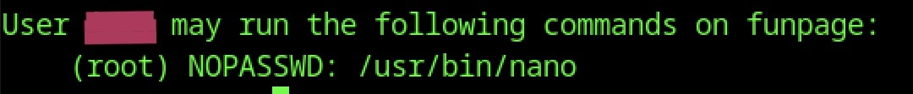

Funpage is a short, easy CTF designed to practice very basic penetration-testing skills. Let’s start the machine:
First, we begin with reconnaissance. Let’s find out which services the target is running:
sudo nmap -sS $IPThe result:
From the scan, we see that two ports are open: SSH and HTTP.
Let’s explore the target. We saw that there is an HTTP server running on it. Check this on: http://$IP/
Nothing obvious stands out. Maybe we should inspect the page’s source code:
Interesting. There is a huge blob of base64 encoded image. Make a note of it, maybe we should check this later for hidden infos.
But first let's do a site discovery:
gobuster -u http://$IP/ -w SecLists/Discovery/Web-Content/common.txt dirWe can see that there is an additional directory on the server: /dev
It contains a list, that seems not useful for us. But check the source code:
We see a base64 encoded text. We should decode it:
echo $TEXT | base64 --decodeThe result seems not usable, but also seems very familiar. Looks like words in a different language: a property of Caesar ciphers. Let's decode it: shifting the letter we got a readable result with two names in it. One must be the username. And indeed, one of them it is!
How to access the target machine? We saw earlier that an SSH service is also running. Let's try access through that! We have a username. But what about the password? Earlier we read, that the user doesn't like to use complicated passwords. So we should give brute force a try.
hydra -l REDACTED -P ./SecLists/Passwords/Leaked-Databases/rockyou.txt.tar.gz $IP sshIndeed, we have a password:
Let's access the machine:ssh REDACTED@$IPAnd we are in. We can find the user flag in the user's home folder.
Note: it seems to user runs a reduced shell. We can fix it easily to issue bash.
We should escalate the user's privileges. It would be a good idea to run linPEAS, but first check if we have any sudo rights:
sudo -lAnd we have:
The user can run nano as root. Let's check how to exploit it in GTFOBins. Following the instructions in there we can get us a root shell, and check the root flag in the root directory.